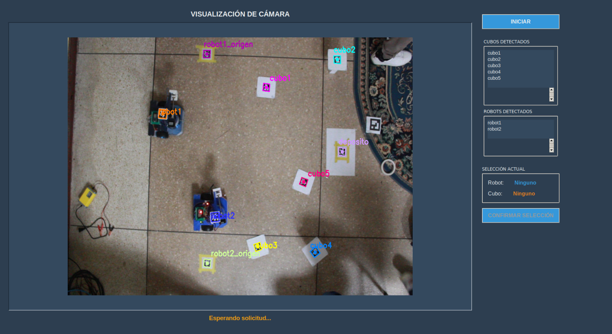
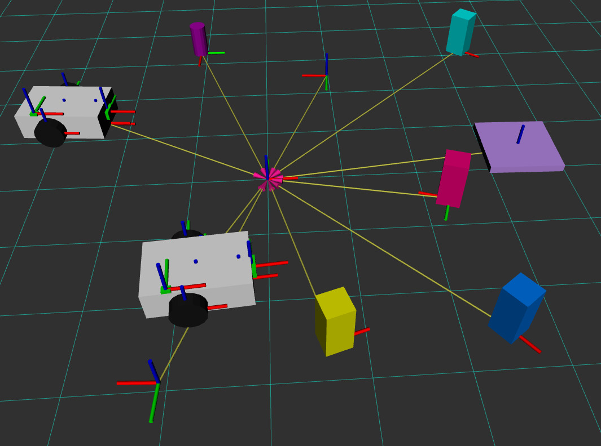

Sistemas Autónomos & ROS 2
Sistema Coordinado Multi-Robot (ROS 2 & ESP32)
Control y visualización avanzada de múltiples robots móviles diferenciales y manipuladores cilíndricos integrados mediante micro-ROS, visión cenital con AprilTags y árboles de comportamiento.

Robots móviles diferenciales y brazos cilíndricos ensamblados

Interfaz de control y selección de robots/objetos

Visualización de estados, frames y trayectorias en RViz
Prueba de funcionamiento y desplazamiento del Robot 1
Prueba de funcionamiento y manipulación del Robot 2
Demostración del flujo con la interfaz gráfica
Arquitectura y Especificaciones Técnicas
- Hardware Integrado: 2 robots móviles diferenciales y 2 robots manipuladores cilíndricos (3 grados de libertad con electroimán para agarre). Sistema controlado por 4 microcontroladores ESP32 (2 por cada robot).
- Comunicación en Tiempo Real: Conexión puenteada mediante micro-ROS Agent hacia una computadora central (procesador i7) ejecutando ROS 2 Humble sobre Ubuntu 22.04.
- Visión Artificial y Localización: Uso de cámara superior y detección de AprilTags para el posicionamiento preciso en 2D de robots, cubos, depósitos y puntos de interés del entorno.
- Lógica y Monitoreo: Coordinación de tareas autónomas mediante Árboles de Comportamiento (Behavior Trees) e interfaz gráfica desarrollada a medida en Python para el envío de comandos y monitoreo en vivo.